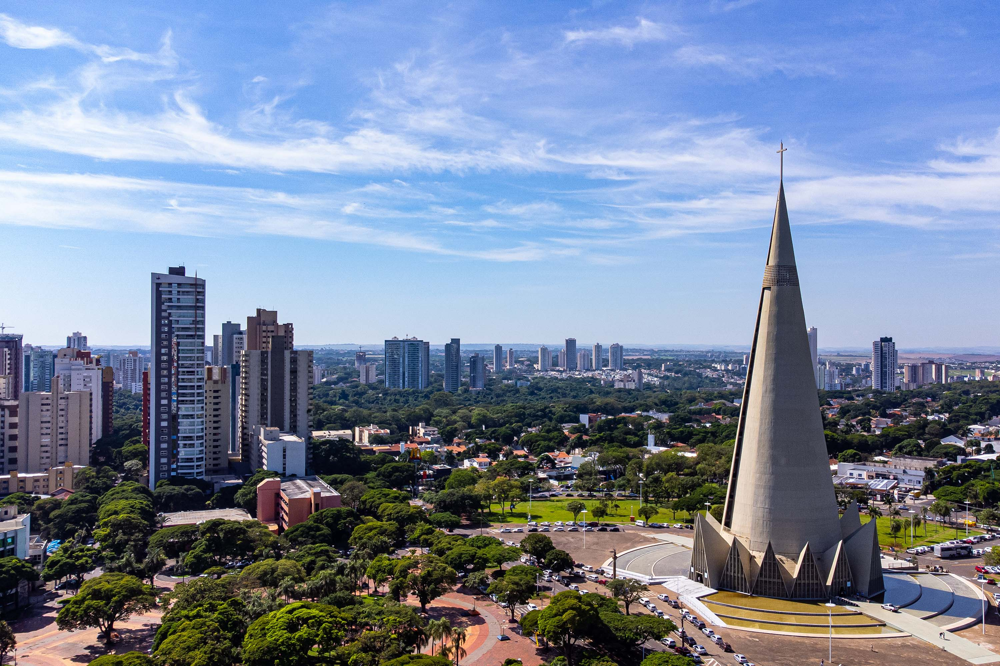

üìçLocaliza√ß√£o
Maringá é uma cidade localizada no estado do Paraná, no sul do Brasil.
Fundada em 1947, é conhecida por sua excelente qualidade de vida, planejamento urbano e áreas verdes.
A cidade possui uma economia diversificada, com destaque para os setores de comércio, serviços, agricultura e tecnologia. Além disso,
Maringá destaca-se por sua infraestrutura moderna, universidades renomadas e eventos culturais que atraem visitantes de várias regiões.

-
Cereais: Milho,
Trigo,
Arroz,
Aveia e
Cevada
-
Frutas:
Maçã,
Banana,
Laranja,
Manga e
Abacaxi
-
Verduras e Legumes:
Alface,
Tomate,
Cenoura,
Batata e
Cebola
Qual sua mercadoria e lugar de destino